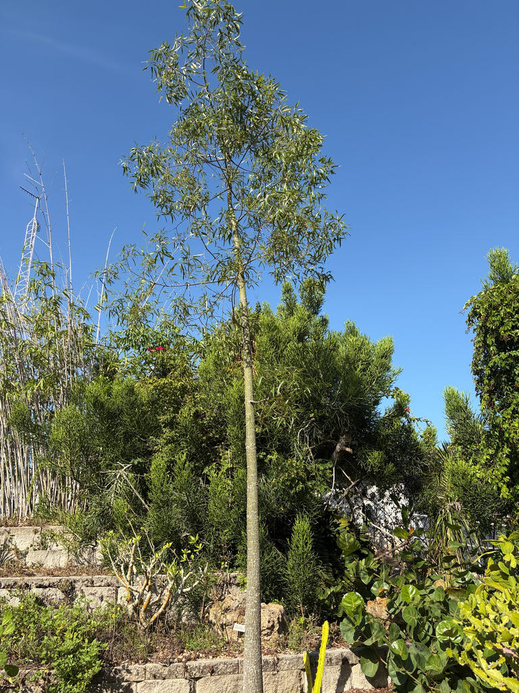

- That swollen trunk the species is famous for? Our specimen in the cactus and succulent garden is young — about 15 feet tall with a trunk still only a few inches across.
- The bottle shape takes patience: the characteristic swell typically doesn't begin to show until a tree is at least five to ten years old, and the full, exaggerated profile of a mature specimen takes decades. What you're looking at now is the quiet beginning of something dramatic.
- The bottle shape, when it does arrive, is not just sculptural — it is a water tank. A mature tree can store enough moisture inside its soft, fibrous wood to carry itself through months of drought, and Indigenous Australians knew it: they would bore into the trunk during dry seasons to access the water stored there.
- The species name rupestris is Latin for 'growing among rocks' — a nod to the Queensland ridgelines and stony outcrops where this tree makes its home. It is, in effect, a plant named after its neighborhood.
- The seeds are genuinely nutritious food — roughly 18 percent protein and 25 percent fat, with significant zinc and magnesium. First Nations Australians ate them raw or roasted after removing the irritating hairs from the pod. The seeds were also of interest to early European settlers, who roasted and crushed them as a coffee substitute.
The Queensland Bottle Tree is endemic to Australia — specifically to the dry interior of central Queensland and adjacent northern New South Wales, where it grows on rocky ridges, stony plains, and in open semi-arid woodlands. It occurs nowhere else in the wild.
In Queensland it is a defining species of the endangered 'bottletree scrub,' a type of semi-evergreen vine thicket in the Brigalow Belt. Remnant trees are commonly left standing when land is cleared because of their deep cultural significance and practical value as shade and fodder for livestock.
The species arrived in Florida through the ornamental trade, valued for its striking architecture and remarkable drought tolerance.
- The genus name Brachychiton comes from the Greek for 'short tunic,' a reference to the loose, bristly coat surrounding each seed inside the woody pod. There are roughly 30 species in the genus, most native to tropical and dry parts of Australia, with a few extending into Papua New Guinea. The Queensland Bottle Tree is the one most associated with the extreme water-storing trunk.
- The tree is classified as a caudiciform — a plant that stores water and nutrients in a swollen stem or trunk base rather than in fleshy leaves or separate tubers. In B. rupestris, the trunk stores water in large parenchymatous wood tissue with cavities in the vertical wood parenchyma, a structure documented as unique to section Delabechea within the genus.
- This architecture allows the trunk to hold a remarkable volume of moisture without structural collapse, explaining the tree's extraordinary resilience in drought.
- In its native Queensland, the tree is an important cultural and ecological marker. The word 'kurrajong,' shared across several related Brachychiton species, is an Aboriginal term meaning 'fiber-yielding plant' — a reflection of the many uses Indigenous Australians found in the bark, seeds, roots, and wood.
- Farmers still leave isolated bottle trees standing after clearing because they remain valuable shade trees and emergency fodder sources during drought years.
In its native Queensland, the Queensland Bottle Tree supports a range of wildlife. The creamy-yellow flowers attract bees and other nectar-seeking insects, and the tree has historically been noted as a honey source.
In its natural habitat, the large woody pods and the insects the tree supports in turn draw birds; remnant trees on cleared farmland are especially valued as refuges for wildlife in an otherwise open landscape.
In Florida cultivation, its wildlife value is modest by comparison. The flowers will attract bees and generalist pollinators, but the species has no co-evolutionary history with Florida's native insects or butterflies, and it is not documented as a larval host for any local lepidopteran species. Visitors looking for the park's best pollinator habitat will find it among the native plantings.
Propagated by seed. Unlike some relatives, B. rupestris does not sucker or spread vegetatively. The species is monoecious, meaning male and female flowers are borne separately on the same individual tree. Seed germinates readily without pretreatment, though dried seed benefits from a 12 to 24 hour soak in warm water before sowing.
Small, bell-shaped, creamy yellow with reddish markings inside the throat. Flowers are arranged in panicles of roughly 10 to 30 blooms. In the Southern Hemisphere the tree flowers from September to November (spring into early summer); in Florida cultivation, flowering typically occurs in spring to early summer. Trees grown from seed may take 10 to 20 years to flower for the first time.
Woody, boat-shaped follicles (pods) follow the flowers. Each pod contains several seeds surrounded by stellate trichomes — fine, stiff, star-shaped hairs characteristic of the Malvaceae family that cause mechanical skin and eye irritation on contact. Handle with gloves; the seeds themselves are edible once the trichomes are removed, but casual handling of open pods is genuinely hazardous.
Notably variable. Young trees carry narrow, deeply lobed, almost palm-like leaves that can look quite different from mature foliage. On older trees the leaves become simpler — narrow, strap-like blades, sometimes with just a few lobes or none at all. This shift in leaf form from juvenile to adult is dramatic enough that young and old trees of the same species can look like different plants.
The defining feature. Young trunks are straight, slender, and often pale green-gray. Over years to decades the trunk gradually swells into the characteristic bottle shape, storing water in large parenchymatous wood tissue with cavities in the vertical wood parenchyma — an anatomical trait unique to section Delabechea.
Mature trunks reach roughly 1 to 3.5 meters (3 to 11 feet) in diameter and are covered in dark gray bark with shallow tessellation and deeper fissures.
The trunk is the whole story — look at its profile from a distance first, taking in the taper from wide base to narrower crown. Up close, note the dark gray, tessellated bark and the way the wood feels almost slightly soft compared to a typical hardwood trunk.
Look at the leaves: are they narrow and simple, or lobed and more complex? Both forms can appear on the same tree at different stages or in different parts of the canopy. If the tree has been in fruit, look on the ground for the woody, boat-shaped pods — and if you pick one up, do so carefully, because the stellate trichomes inside the open pod are a real irritant.
The main hazard here is the seed pod. Inside each woody follicle, the seeds are surrounded by stellate trichomes — fine, stiff, star-shaped hairs that cause significant mechanical skin irritation and can be seriously uncomfortable if they reach the eyes. Wear gloves any time you handle open pods or collect seed.
The seeds themselves are edible once the trichomes are thoroughly removed and have a long history as food; but casual handling of open pods is not a good idea. The rest of the tree — leaves, bark, flowers — is considered non-toxic to people, dogs, and cats.
The genus Brachychiton contains roughly 30 species, and several are grown ornamentally in Florida — most notably B. acerifolius (Illawarra Flame Tree, with spectacular scarlet flowers) and B. populneus (Kurrajong). B. rupestris is the one prized specifically for its trunk architecture rather than its flowers.
This tree is a slow builder of character. A young specimen at the park may not yet show the full bottle profile, but the trunk is already doing its quiet work. Given enough decades, what you see here will look like something from a different planet.


- © Austin Sibrian (CC-BY-NC), via iNaturalist